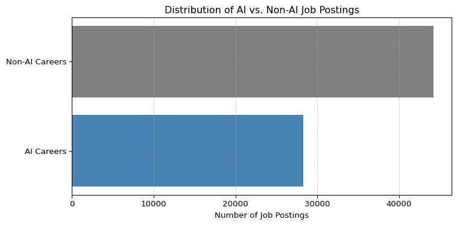

The rapid evolution of Artificial Intelligence (AI) has significantly reshaped the job market—creating high-demand, specialized roles while also influencing the trajectory of traditional careers. This project explores how salaries differ between AI-related and non-AI occupations using real-world job postings from the Lightcast dataset. Through classification, aggregation, and visualization, we aim to uncover compensation trends across both career paths.
2 Dataset Overview
We analyzed a total of 72,498 U.S. job postings from the Lightcast database. Each role was tagged as either an AI Career or a Non-AI Career using keyword matching on the TITLE_NAME and NAICS_2022_2_NAME columns.
AI Careers: 28,310 postings(e.g., Data Scientist, Machine Learning Engineer, AI Engineer)
A custom rule-based function was used to assign each job into one of the two groups. We then filtered the dataset to include only postings with valid salary entries.
Code
import matplotlib.pyplot as pltimport pandas as pdimport osdf = pd.read_csv('lightcast_job_postings.csv', low_memory=False)job_counts = {'AI Careers': 28310, 'Non-AI Careers': 44188}plt.figure(figsize=(8, 4))plt.barh(list(job_counts.keys()), list(job_counts.values()), color=['steelblue', 'gray'])plt.xlabel("Number of Job Postings")plt.title("Distribution of AI vs. Non-AI Job Postings")plt.grid(axis='x', linestyle='--', alpha=0.6)plt.tight_layout()plt.savefig("DATA/job_distribution_bar_chart.png", dpi=300, bbox_inches='tight')plt.show()

3 Salary Summary Table
The salary summary table below provides a statistical overview of compensation across AI and non-AI careers. This analysis is derived strictly from the Lightcast job postings dataset after filtering for valid salary entries.
Key metrics shown include mean, median, minimum, maximum, standard deviation, and the number of valid salary postings for each group. These statistics allow for a detailed comparison between the two career categories.
Code
import pandas as pdimport osdf = pd.read_csv('lightcast_job_postings.csv', low_memory=False)df['SALARY'] = pd.to_numeric(df['SALARY'], errors='coerce')def tag_ai(row): title =str(row['TITLE_NAME']).lower() industry =str(row['NAICS_2022_2_NAME']).lower()if ('ai'in title or'artificial intelligence'in title or'machine learning'in title or'data scientist'in title or'deep learning'in title or'nlp'in title or'computer vision'in title or'robotics'in title or'ml'in title or'data engineer'in title or'ml engineer'in title or'scientist'in title or ('professional, scientific, and technical services'in industry) or ('information'in industry)):return'AI Career'else:return'Non-AI Career'df['Career_Type'] = df.apply(tag_ai, axis=1)df_salary = df.dropna(subset=['SALARY'])mean_salary_df = df_salary.groupby('Career_Type')['SALARY'].mean().round(2).reset_index()mean_salary_df.columns = ['Career_Type', 'Mean_Salary ($)'] df['SALARY'] = pd.to_numeric(df['SALARY'], errors='coerce')df_salary = df.dropna(subset=['SALARY'])summary_stats = df_salary.groupby('Career_Type')['SALARY'].agg( count='count', mean='mean', median='median',min='min',max='max', std='std').round(2)summary_stats = summary_stats.rename(columns={'count': 'Valid Salary Entries','mean': 'Mean Salary ($)','median': 'Median Salary ($)','min': 'Minimum Salary ($)','max': 'Maximum Salary ($)','std': 'Standard Deviation ($)'})summary_stats['Job Postings Count'] = [28310if i =='AI Career'else44188for i in summary_stats.index]summary_stats = summary_stats[['Job Postings Count', 'Valid Salary Entries', 'Mean Salary ($)','Median Salary ($)', 'Minimum Salary ($)', 'Maximum Salary ($)','Standard Deviation ($)']]summary_stats
Job Postings Count
Valid Salary Entries
Mean Salary ($)
Median Salary ($)
Minimum Salary ($)
Maximum Salary ($)
Standard Deviation ($)
Career_Type
AI Career
28310
11713
133344.66
130500.0
23585.0
500000.0
43401.01
Non-AI Career
44188
19095
108512.87
102500.0
15860.0
500000.0
43552.64
The table clearly shows that AI-related careers offer higher mean and median salaries compared to non-AI careers. The minimum salary for AI jobs is also notably higher, indicating a stronger salary floor. Although both groups have similar standard deviations, suggesting comparable salary variability, the overall compensation level for AI roles is substantially greater.
4 Salary Distribution Visualization
The following boxplot visualizes the salary distributions for AI versus non-AI career categories. It graphically represents the median, interquartile ranges, and outliers for each group.
Code
import pandas as pdimport osimport matplotlib.pyplot as plt# Load the datasetdf = pd.read_csv('lightcast_job_postings.csv', low_memory=False)# Tag careers before subsettingdef tag_ai(row): title =str(row['TITLE_NAME']).lower() industry =str(row['NAICS_2022_2_NAME']).lower()if ('ai'in title or'artificial intelligence'in title or'machine learning'in title or'data scientist'in title or'deep learning'in title or'nlp'in title or'computer vision'in title or'robotics'in title or'ml'in title or'data engineer'in title or'ml engineer'in title or'scientist'in title or'professional, scientific, and technical services'in industry or'information'in industry):return'AI Career'else:return'Non-AI Career'df['Career_Type'] = df.apply(tag_ai, axis=1)# Now subset only rows with valid salarydf_salary = df.dropna(subset=['SALARY'])# Plot without showing <Figure ...> outputax = df_salary.boxplot(column='SALARY', by='Career_Type', figsize=(10,6))plt.title('Salary Comparison: AI vs Non-AI Careers')plt.suptitle('')plt.xlabel('Career Type')plt.ylabel('Salary ($)')plt.grid(True)plot_path = os.path.join('DATA', 'ai_vs_nonai_salary_comparison.png')plt.savefig(plot_path, dpi=300, bbox_inches='tight')plt.show()
The boxplot highlights that AI careers have a higher median salary and a more compressed lower salary range compared to non-AI careers. While both groups exhibit high-end salary outliers (up to $500,000), non-AI careers show a greater spread of lower-end salaries. This suggests that AI careers offer more consistent and stable compensation, whereas non-AI jobs have more variability, particularly toward lower-paying positions.
5 Forecasting AI Career Trends
To explore future patterns, we used a simple linear regression model to forecast average AI salaries and job posting volumes over the next six months.
Code
import pandas as pdimport osimport matplotlib.pyplot as pltimport statsmodels.api as smdf = pd.read_csv('lightcast_job_postings.csv', low_memory=False)df['POSTED'] = pd.to_datetime(df['POSTED'], errors='coerce')df['SALARY'] = pd.to_numeric(df['SALARY'], errors='coerce')def tag_ai(row): title =str(row['TITLE_NAME']).lower() industry =str(row['NAICS_2022_2_NAME']).lower()if ('ai'in title or'artificial intelligence'in title or'machine learning'in title or'data scientist'in title or'deep learning'in title or'nlp'in title or'computer vision'in title or'robotics'in title or'ml'in title or'data engineer'in title or'ml engineer'in title or'scientist'in title or'professional, scientific, and technical services'in industry or'information'in industry):return'AI Career'else:return'Non-AI Career'df['Career_Type'] = df.apply(tag_ai, axis=1)df_valid = df.dropna(subset=['POSTED'])monthly_counts = df_valid.groupby([df_valid['POSTED'].dt.to_period('M'), 'Career_Type']) \ .size().unstack().fillna(0)monthly_counts.index = monthly_counts.index.to_timestamp()plt.figure(figsize=(10, 5))monthly_counts.plot(kind='line', marker='o', ax=plt.gca())plt.title("Monthly Job Postings: AI vs. Non-AI Careers")plt.ylabel("Number of Postings")plt.xlabel("Month")plt.grid(True)plt.tight_layout()job_postings_path ="DATA/monthly_job_postings_forecast.png"plt.savefig(job_postings_path, dpi=300)plt.show()df_ai = df[(df['Career_Type'] =='AI Career') & (~df['SALARY'].isna())]monthly_salary = df_ai.groupby(df_ai['POSTED'].dt.to_period('M'))['SALARY'].mean().dropna()monthly_salary.index = monthly_salary.index.to_timestamp()X = sm.add_constant(range(len(monthly_salary)))y = monthly_salary.valuesmodel = sm.OLS(y, X).fit()future_periods =6future_X = sm.add_constant(range(len(monthly_salary), len(monthly_salary) + future_periods))forecast = model.predict(future_X)last_date = monthly_salary.index[-1]future_dates = [last_date + pd.DateOffset(months=i+1) for i inrange(future_periods)]plt.figure(figsize=(10, 5))plt.plot(monthly_salary.index, monthly_salary.values, marker='o', label='Historical Avg Salary (AI)')plt.plot(future_dates, forecast, marker='x', linestyle='--', label='Forecast (Next 6 Months)')plt.title("Forecast: Average AI Salary Over Time")plt.ylabel("Salary ($)")plt.xlabel("Month")plt.grid(True)plt.legend()plt.tight_layout()salary_forecast_path ="DATA/ai_salary_forecast.png"plt.savefig(salary_forecast_path, dpi=300)plt.show()
The analysis of monthly job postings reveals that Non-AI careers consistently dominate the U.S. job market, averaging around 9,000 postings per month. Despite experiencing a noticeable dip in July, Non-AI job volumes quickly rebounded in August and September, indicating strong demand recovery. In contrast, AI careers maintain a lower volume, typically ranging between 5,000 and 6,000 postings monthly. However, the trend among AI roles appears more stable, with minor fluctuations and a modest recovery following July’s decline. This suggests that while fewer in quantity, AI job postings demonstrate resilience and steady momentum in hiring activity.
Looking at the salary trends for AI careers, historical data from May to September 2024 shows moderate fluctuations, with a pronounced dip in August representing the lowest average salary in that period. Using a simple linear regression model, forecasts from October 2024 through March 2025 indicate a gradual decline in average AI salaries. Importantly, this downward trend does not suggest collapse but rather points to a stabilizing market. As AI technologies become more widespread and accessible, the normalization of compensation—paired with a growing supply of skilled candidates—could be moderating previously inflated salary levels. Despite the projected dip, AI roles remain high-paying and continue to offer strong long-term potential.
6 Key Insights
AI-related careers consistently offer higher salaries, with a mean of $133,344 and median of $130,500, compared to $108,513 and $102,500 respectively for non-AI roles.
Salary variability remains relatively equal across both groups (~$43,000 standard deviation), but AI roles tend to avoid the lower-end salaries more common in non-AI positions.
The minimum salary for AI careers is substantially higher at $23,585, indicating a stronger baseline earning potential versus $15,860 for non-AI roles.
The maximum reported salary is identical across both categories ($500,000), likely reflecting high-level executive or specialized niche roles.
AI job postings, while fewer in number, show consistent volume and a stable rebound after a mid-year dip, suggesting continued demand for AI talent.
Forecasting results predict a gradual decline in AI average salaries over the next six months, indicating potential market stabilization rather than contraction.
7 Conclusion
This analysis confirms that AI-related roles provide superior salary outcomes, both in average and median terms, and offer greater compensation stability at the lower end of the spectrum. Despite a projected slight decline in average salaries, AI positions remain highly competitive and rewarding.
These findings emphasize the value of developing AI-focused skill sets such as machine learning, NLP, and data engineering. For students, job seekers, and educators alike, aligning educational and career strategies with the AI sector’s continued evolution will be key to unlocking long-term financial and professional success.